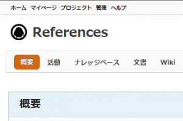
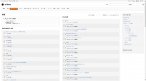

久しぶりにBitNami Redmine Stackを更新しました。 が、今回はいつも以上に更新に手間取りました。
基本のアップデート手順は前回 (2.0.3-1 to 2.1.0-0)と同じですが、**(8)** の手順は実行しないでください。 つまり (7) まで実行した段階で、次からの手順を実行します。
(1) プラグインの退避
_InstallDir_\apps\redmine\htdocs\plugins (InstallDirはBitNami Redmine Stackのインストール先) から、プラグインを一度全部別のフォルダに移動します。 私の場合は、
redmine_logs
redmine_comment_only
redmine_knowledgebase
でした。
(2) データベースのマイグレーション
データベースの更新を実行。スタートメニュー->BitNami Redmine Stack->Use BitNami Redmine Stack でコマンドプロンプトを起動。 以下のコマンドを順次実行 (カレントディレクトリは私の環境です)。 [code lang=”dos”] C:\BitNami\Redmine>cd apps\redmine\htdocs C:\BitNami\Redmine\apps\redmine\htdocs>rake db:migrate RAILS_ENV=”production” [/code] すると、 [code lang=”dos”] C:\BitNami\Redmine\apps\redmine\htdocs>bundle exec rake db:migrate RAILS_ENV=”pr oduction” rake aborted! An error has occurred, all later migrations canceled:
Mysql2::Error: Table ‘queries_roles’ already exists: CREATE TABLE `queries_roles ` (`query_id` int(11) NOT NULL, `role_id` int(11) NOT NULL) ENGINE=InnoDBC:/BitN ami/Redmine/apps/redmine/htdocs/vendor/bundle/ruby/1.9.1/gems/activerecord-3.2.1 7/lib/active_record/connection_adapters/abstract_mysql_adapter.rb:245:in `query’ [/code] のようなエラーが出ました。 どうも**queries_roles**が既に存在しているとのことなので、このテーブルを削除します。 **※削除前にこのテーブルを削除していいかは確認してください** まず**mysql**に接続します。 データベースのパスワードは**_InstallDir_\apps\redmine\htdocs\config\database.yml**に書かれています。 引き続きコマンドプロンプトに下記のように入力します。 [code lang=”dos”] mysql -u bitnami -p bitnami_redmine Enter password: (ここはdatabase.ymlに記述されているパスワードを入力) drop table queries_roles; exit [/code] これで**queries_roles**が削除されます。 もう一度マイグレーションを試みますが、今度は、 [code lang=”dos”] C:\BitNami\Redmine\apps\redmine\htdocs>bundle exec rake db:migrate RAILS_ENV=”pr oduction” == CreateCustomFieldsRoles: migrating ======================================== – create_table(:custom_fields_roles, {:id=>false}) rake aborted! An error has occurred, all later migrations canceled:
Mysql2::Error: Table ‘custom_fields_roles’ already exists: CREATE TABLE `custom_ fields_roles` (`custom_field_id` int(11) NOT NULL, `role_id` int(11) NOT NULL) E NGINE=InnoDBC:/BitNami/Redmine/apps/redmine/htdocs/vendor/bundle/ruby/1.9.1/gems /activerecord-3.2.17/lib/active_record/connection_adapters/abstract_mysql_adapte r.rb:245:in `query’ [/code] と表示され、同じようにcustom_fields_rolesが既に存在しているとのことなので、下記のコマンドでこのテーブルを削除します。 ※削除前にこのテーブルを削除していいかは確認してください [code lang=”dos”] mysql -u bitnami -p bitnami_redmine Enter password: (ここはdatabase.ymlに記述されているパスワードを入力) drop table custom_fields_roles; exit [/code] その後、マイグレーションを実行すると成功します。
(3) プラグインのマイグレーション その1
退避したプラグインを_InstallDir_\apps\redmine\htdocs\pluginsに戻します。 ただし、redmine_knowledgebaseは削除します。 ※redmine_knowledgebaseを使っていない人は何もしません 戻した後下記のコマンドでプラグインのマイグレーションを実施します。 [code lang=”dos”] bundle install bundle exec rake redmine:plugins:migrate RAILS_ENV=production bundle exec rake tmp:cache:clear bundle exec rake tmp:sessions:clear [/code] 成功したら、redmine manager tool から全てのサービス再起動。 その後、redmineにログインしてエラーが無いことを確認したら、2.5.1-1への更新が完了します。
(4) プラグインのマイグレーション その2
redmine_knowledgebaseを使っている方はこの作業が必須になります。 まず、最新のredmine_knowledgebaseを入手します (2014/05/10時点で3.0.4が最新)。 下記のコマンドを入力します。 [code lang=”dos”] C:\BitNami\Redmine>cd apps\redmine\htdocs\plugins C:\BitNami\Redmine>cd apps\redmine\htdocs\plugins>git clone git://github.com/alexbevi/redmine_knowledgebase.git redmine_knowledgebase C:\BitNami\Redmine>cd apps\redmine\htdocs\plugins>bundle install –no-deployment C:\BitNami\Redmine>cd apps\redmine\htdocs\plugins>bundle exec rake redmine:plugins:migrate RAILS_ENV=production [/code] これでエラー無く更新が完了します。 前項と同じくサービスを再起動してログインします。 そこでおかしな事に気づきます。

{kind=link}
上部のメニューに知識DBの項目がありません。 代わりにプロジェクトのメニューにナレッジベースの文字が追加されています。 公式サイトによると、redmine_knowledgebaseの仕様が変わったようです。
Upon restarting Redmine, the Knowledgebase entry will no longer appear as a :top_menu entry. The knowledgebase is now project-specific, and therefore must be included in at least one project to work properly. If you wish to use it like v2.x, you can make a public project that will only be used to store knowledgebase articles. You will need to go into your database now and change the kb_articles and kb_categories project_id to the project id of the knowledgebase project you just created.
と記載があります。 これは
Redmineを再起動するにあたり、Knowledgebaseの項目がトップメニューの項目に表示されないでしょう。 Knowledgebaseの現在のプロジェクトの仕様により、最低1つの正常に動作しているプロジェクトに含めなくてはなりません。もし、2.X系 (恐らくredmine_knowledgebaseのバージョン)のように使用した場合、記事を保存するためだけのパブリックなプロジェクトを作成します。 kb_articlesとkb_categories内のproject_id列を、作成したプロジェクト (記事を格納するために作成したもの)のproject_idに変更する必要があります。
と訳せます。 纏めれば、従来の記事はRedmine全体のシステムに関連づけられるのではなく、特定のプロジェクトの配下に関連づけられるようになったため、記事を移動する必要があるということです。 そのため、記事を移行させるためのSQLを実行します。
(5) 記事の移動
まず移動先のプロジェクトを作成します (既存のプロジェクトでも構いません)。 移動先のプロジェクトの識別子を確認します。 識別子は設定->情報->識別子から確認できます。 次に、下記のように、mysqlに繋いで、project_idを確認します。 [code lang=”dos”] mysql -u bitnami -p bitnami_redmine Enter password: (ここはdatabase.ymlに記述されているパスワードを入力) SELECT id FROM bitnami_redmine.projects WHERE identifier=’識別子’; [/code] すると、 [code lang=”dos”] +—-+ | id | +—-+ | 27 | +—-+ 1 row in set (0.00 sec) [/code] のような感じで、project_idを取得できます。ここでは27とします。 次にこの値でkb_articlesとkb_categories内のproject_idを更新します。 続けて下記のSQLを実行します。 [code lang=”sql”] UPDATE bitnami_redmine.kb_articles SET project_id=’27’; UPDATE bitnami_redmine.kb_categories SET project_id=’27’; [/code] これで記事の移動は完了しました。 Redmineで移動先のプロジェクトのナレッジベースを確認します。

{kind=link}
このような感じになると思います。 以上でredmine_knowledgebaseの更新は完了です。